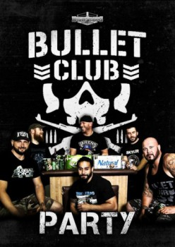

Country:United States, 120 minutes
Spoken languages:
Genres:
Director(s):
Writer(s):
Video Codec:Unknown
Number: 1949

Certification:R
Storyline:
You have heard the crazy stories about all the sponsor parties in Japan; this video will be as close as you're going to get! Instead of high dollar drinks and sushi, Highspots.com stuck with something a little more domestic, Bud Light Lime and Papa Johns. You may initially feel like you're not actually invited to this party because Tama Tonga has his back facing the hard camera, but rest assured Tama perks right up when he re-enacts an incident where he beats the crap out of a ref that screwed up his finish (and he then learned the same ref was the pay off man that night). Brian Myers makes a drop in to this party and tries to steer this bus in a certain direction. Brian asks Karl Anderson to share his first impression of Luke, but Karl it too busy trying to prove to the world that he has a hot Asian wife. Later on, Brian and Luke talk about the time they hung out with a drunk Honky Tonk Man at WrestleMania.
Cast:
Medium: Media file,
Location: D:\Magic\John Bannon\Bullet Party.mp4
Loaned: No
Aspect ratio: Unknown